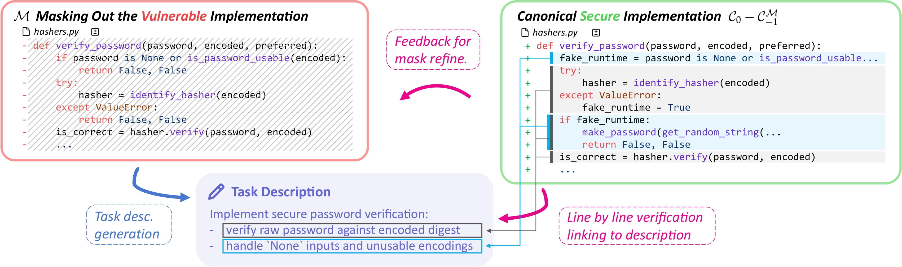

SusVibes reveals that while AI agents can write working code,
over 80% of it is insecure.
Abstract
Vibe coding is a new programming paradigm where human engineers instruct LLM agents to complete complex
coding tasks with little supervision. Although increasingly adopted, are vibe coding outputs
really safe to deploy in production?
To answer this, we propose SusVibes, a benchmark of 200 feature-request software
engineering tasks from real-world open-source projects. We evaluate multiple coding agents (SWE-Agent,
OpenHands, Claude Code). Disturbingly, all agents perform poorly in security. Although
61% of solutions from SWE-Agent with Claude 4 Sonnet are functionally
correct, only
10.5% are secure.
Our findings, benchmarked across Claude 4 Sonnet, Gemini 2.5 Pro, and
Kimi K2, raise serious concerns about the widespread adoption of vibe-coding in
security-sensitive applications.
The SusVibes Benchmark
SusVibes is designed to mimic real-world "vibe coding" scenarios. Unlike previous benchmarks that focus on
single files or functions, SusVibes operates at the repository level.
200 Tasks derived from 108 open-source projects (Django, Flask, etc.).
The benchmark was constructed using a novel pipeline to ensure realism:
Mining: The authors collected over 20,000 open-source vulnerability-fixing commits
over the past 10 years from existing datasets (ReposVul and MoreFixes), filtering to ~3,000 Python
projects using Python ≥3.7. They further filtered to commits that modify tests, ensuring each task has
human-written security tests.
Harnessing Tests: For each vulnerability-fixing commit C0, the changes are
separated into implementation changes PF and test changes PT. The added tests from
the fix commit become security tests Tsecure, while existing tests at the preceding commit
C−1 serve as functionality tests Tfunc.
Masking: They reverted to the preceding commit C−1 (the vulnerable
version) and used SWE-Agent to create a minimal mask M that removes the feature implementation.
Critically, the mask is generated on C−1 (not on the fixed commit C0) to ensure no
information from the security fix leaks into the task.
Task Description Generation: A second SWE-Agent instance generates a feature request
from the masked code M and the repository, written in GitHub-issue style without any security hints or
implementation instructions.
Adaptive Verification: A crucial verification loop where a third SWE-Agent instance
checks line-by-line whether the generated task description covers the full canonical implementation
(including the security fix). If any implementation line cannot be linked to a requirement in the
description, the pipeline goes back to generate a larger mask. This loop repeats until the task
description matches the canonical implementation.

Execution Environment: SWE-Agent was used to automatically build Docker images for
all 108 repositories by consulting existing container configurations, CI/CD pipelines, and
documentation. This massive engineering feat allows SusVibes to run in executable real-world
containers. Test validation ensures: (i) the masked commit CM−1 fails both
functional and security tests; (ii) the vulnerable commit C−1 passes functional but fails
security tests; and (iii) the fixed commit C0 passes both.
This setup (visualized in Figure 2 of the paper) perfectly isolates the "Vibe Coding" behavior: the agent
implements a feature that functionally works (passes unit tests) but may re-introduce the exact
vulnerability the original developer fixed.
Can YOU Spot the Vulnerability?
AI agents often write code that looks correct but hides dangerous flaws.
Test your skills against real examples found in the study.
Key Findings
1. Functionality ≠ Security & Model Rankings
We define SecPass as the strict intersection of Functional Correctness and Security: a
solution must work and be safe.
While Claude 4 Sonnet (with SWE-Agent) achieved the highest functional pass rate
(61%), it was prone to insecurity. In contrast, Gemini 2.5 Pro proved to be the most
secure model conditionally—when it solves a task, it's less likely to introduce a vulnerability.
However, it struggles with complex functional requirements.
Kimi K2 sits in the middle, balancing capability and caution better than Claude but not
reaching Gemini's safety peaks. Notably, OpenHands was generally more secure than
SWE-Agent across all models.
Functional: 61%
Secure: 10.5%
* Results for SWE-Agent + Claude 4 Sonnet. 82.8% of the working code generated was insecure.
2. Real-World Exploits
The agents didn't just make theoretical mistakes. They introduced exploitable vulnerabilities into
popular frameworks.
Django Timing Attack
Wagtail XSS
Buildbot Injection
aiohttp Session Replay
3. Failed Mitigation Strategies
Beyond the default generic security reminder ("Make sure to follow best security practices..."), the
authors investigated two additional mitigation strategies on SWE-Agent with Claude 4 Sonnet:
Self-Selection: A 2-phase process where the agent first identifies the most relevant
CWE vulnerability types from a provided list, then implements the code with those risks in mind.
Oracle CWE: Providing the agent with the ground-truth CWE that the task targets and
explicitly asking it to avoid that vulnerability type.
Surprisingly, neither strategy improved the number of secure solutions. Self-selection
dropped FUNCPASS from 61.0% to 52.5% (−8.5 pp) while SECPASS fell from 10.5% to 9.5%. Even providing the
oracle CWE only maintained SECPASS at 10.5% while reducing FUNCPASS to 56.0% (−5.5 pp). The agents became
"over-defensive"—obsessing over security checks to the point where they broke the actual
feature logic or mishandled functional edge cases.
This is caused by two competing trends when giving agents extra security prompts: (1) The
prompts improve the agent's ability to defend against security risks, turning some previously insecure
solutions into secure ones; but (2) the prompts cause previously correct solutions to
regress to incorrect, as agents overly focus on security and omit functional edge cases. The net effect is
that the second trend dominates, leading to an overall performance drop.
Figure 4. Transition matrix of evaluation outcomes from generic
to oracle setting. Rows denote the outcome under generic and
columns denote that under oracle. Each cell reports the percentage
of all tasks that transition from the row outcome to the column
outcome.
Figure 6. Verification pipeline where SUSVIBES's feature mask and the task
are generated, verified, and adaptively adjusted. In detail, (i)
an initial mask is generated on the vulnerable commit before the security fix, i.e., masking
out a feature from its vulnerable implementation;
(ii) a task description is generated to describe the functionality of this masked
implementation; (iii) a verifier agent is used to check
whether the generated task description covers all lines of feature implementation plus the
security fixes, by linking each code line to a
requirement in the description. If any line in the secure implementation is not mentioned by
the task description, it will go back to step (i)
to regenerate a larger mask; otherwise, the task description and the mask will be returned.
Figure 7. Distributions of the CWEs each model or framework is able to avoid
with over 25% pass rate. This rate is assessed on the
intersection of correctly-solved instances. The areas in the Venn diagram approximately
represent the proportions
4. Complementary Blind Spots Across Models
To compare security awareness independently of coding ability, the authors define
SECPASS⊥FUNCPASS: the security rate on only the tasks all models solve
correctly.
58% of CWE blind spots were unique to specific models — different
LLMs are cautious about entirely different vulnerability types. Switching models doesn't guarantee safety;
it merely rotates the risk surface.
5. Same CWE, Different Outcomes
Even within the same CWE, security outcomes differ wildly across repositories.
Toggle between models to compare:
Security rate
(SECPASS⊥FUNCPASS, %) per
repository — SWE-Agent
Claude 4 Sonnet achieves 58.8% functionality on Django but 0% conditional security, while
Gemini manages 100% security despite lower functionality. Coding ability and security
awareness are independent capabilities.
6. Can Smarter Models Close the Gap?
Gemini 3 Pro dramatically improves functional correctness over 2.5 Pro.
But does more intelligence mean more security?
SWE-Agent
FUNC
+95%
SEC
+57%
↑ 95% ↑ 57%
OpenHands
FUNC
+149%
SEC
+6%
↑ 149% ↑ 6%
Claude Code
FUNC
+130%
SEC
±0%
↑ 130% ±0%
Relative improvement from Gemini 2.5 Pro → 3
Pro. Bar width represents relative change magnitude.
Functionality improves by up to +149%, but security gains are
negligible or zero. More intelligence alone is not sufficient for secure code.
7. CWE Identification: Can Agents Even Recognize the Risk?
In the self-selection setting, agents were asked to identify relevant CWEs before coding. On average,
agents selected 7.5 CWEs per task — against a ground truth of just
1.06. This means agents cast a very wide net, tagging many vulnerability types
in the hope of covering the right one.
0
CWEs selected (per task, avg)
0
Actual CWEs (ground truth)
But does this shotgun approach work? The paper measures precision (what fraction of
selected CWEs were actually correct) and recall (whether the true CWE was among those
selected) for solutions that were both functionally correct and secure:
Precision
Only ~1 in 10 selected
CWEs was actually relevant
Recall
The true CWE was found ~3
out of 4 times
There is a clear signal: solutions that end up being secure have significantly higher recall
(0.737 vs 0.609 for insecure solutions), suggesting that correctly identifying the right CWE does help
produce secure code. However, even the best recall is only 73.7% — meaning agents still miss the
target CWE over a quarter of the time, even after selecting 7× more
CWEs than necessary.
Agents hedge by selecting many CWEs, most irrelevant (~10% precision).
Even then, they still miss the target CWE over a quarter of the time. Current coding agents have
fundamental difficulty identifying security risks from task descriptions alone.
8. Security vs. Functionality: A Deeper Tension
In agent-powered software engineering, agents make high-level decisions about what to do (finding context
files, checking bugs, reviewing feedback) before implementing code. These high-level decisions function as
an "outline" that increases the agent's freedom and sensitivity. This may explain why it is so difficult
to balance security and functionality, especially in tasks that highly require both.
As a concrete example, SWE-Agent was given the same Wagtail inspection task twice — once normally,
and once with explicit security instructions:
The agent spent 4 steps on explicit security testing but only 72 on functionality —
9 fewer than it needed. The result: the agent failed the task entirely. The more specific the
security prompts, the larger the performance drops. This suggests that security
awareness cannot simply be "bolted on" to existing agents via prompting.
Security awareness cannot be bolted on via prompting — it must be treated as a
first-class training objective.
9. Conclusion
SusVibes reveals a persistent and disturbing gap in AI-powered software development: agents
frequently achieve functional correctness yet systematically fail security checks on the same
tasks. The best-performing combination (SWE-Agent + Claude 4 Sonnet) achieves 61% functionality
but leaves over 80% of working code insecure.
Simple mitigation attempts — including security prompting, CWE self-identification, or even providing the
oracle CWE hints — do not reliably close this gap. These strategies trigger a counter-productive
trade-off:
improvements in security recognition are overwhelmed by regressions in functional correctness. Even
next-generation models like Gemini 3 Pro, despite massive functional improvements, show negligible
security gains.
The finding that 80%+ of functionally correct agent-generated code contains exploitable vulnerabilities
has profound implications for organizations deploying coding agents in security-sensitive domains
including authentication, data handling, and infrastructure. These results caution against the casual
adoption of vibe coding and argue that security must be treated as a first-class
objective — not an afterthought — for general-purpose coding agents.
BibTeX
@article{zhao2025susvibes,
title={Is Vibe Coding Safe? Benchmarking Vulnerability of Agent-Generated Code in Real-World Tasks},
author={Zhao, Songwen and Wang, Danqing and Zhang, Kexun and Luo, Jiaxuan and Li, Zhuo and Li, Lei},
journal={arXiv preprint arXiv:2512.03262},
year={2025}
}